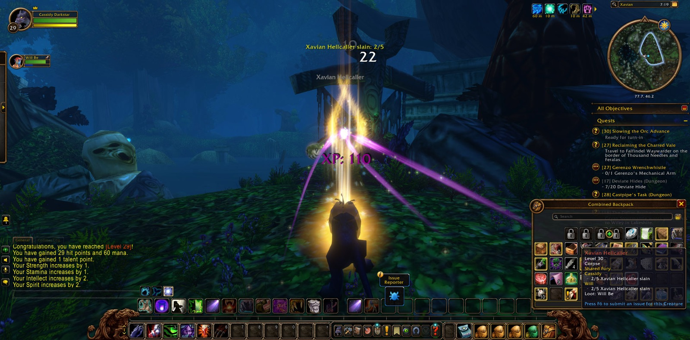
Cassidy Darkstar set out from the Tower of Althalaxx in Darkshore, where Nerved, a paladin, and Sethra, a warlock, kept company with him briefly before their ways parted. He went south by Auberdine and the Twilight Shore, over the Zoram Strand and into the Stonetalon Mountains, and came at last into the Charred Vale. There he took up the errand of Reclaiming the Charred Vale. Bloodfury Ambushers, Slayers and Roguefeathers fell before him, and the basilisks yielded the eight Crystalized Scales sought for Mauren. Scoob, a warrior, stood beside him there for a little while. The Vale did not let him pass unscathed, and once he fell there, but he returned and finished what he had begun. Many pictures were taken in that place.
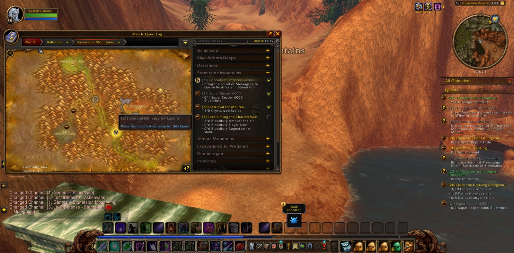
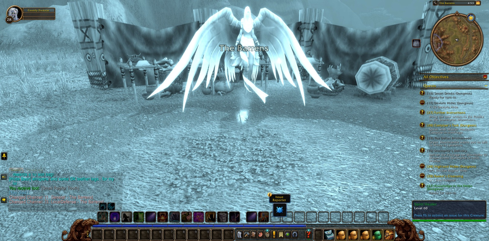
At Windshear Crag he saw through the Special Delivery for Gaxim and the matter of the Super Reaper 6000. Then he bore a Sealed Envelope down through Greatwood Vale into the Barrens, bound for Sputtervalve. Coked, a warrior, walked the Gold Road with him a short way. At Ratchet the letter was given up and new errands were gathered: Blueleaf Tubers, Deepmoss Spider Eggs, and Raptor Horns. He brought back five intact horns. Next he was sent for Smart Drinks into the Wailing Caverns beneath Lushwater Oasis, and in the Cavern of Mists Hilde, a hunter, joined him for a good stretch of that dark road. Together they took up the hunt for Deviate Hides, and the six Wailing Essences were won. He went back to Ratchet, and from there to Windshear Crag, where his Further Instructions ended in a new name: Gerenzo Wrenchwhistle.
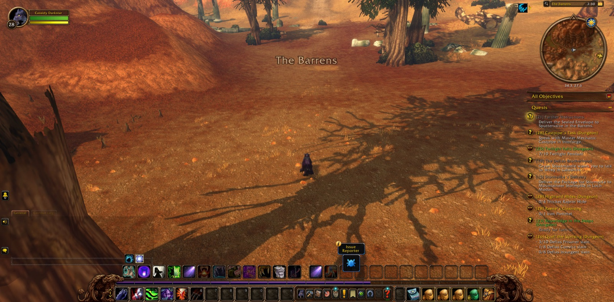
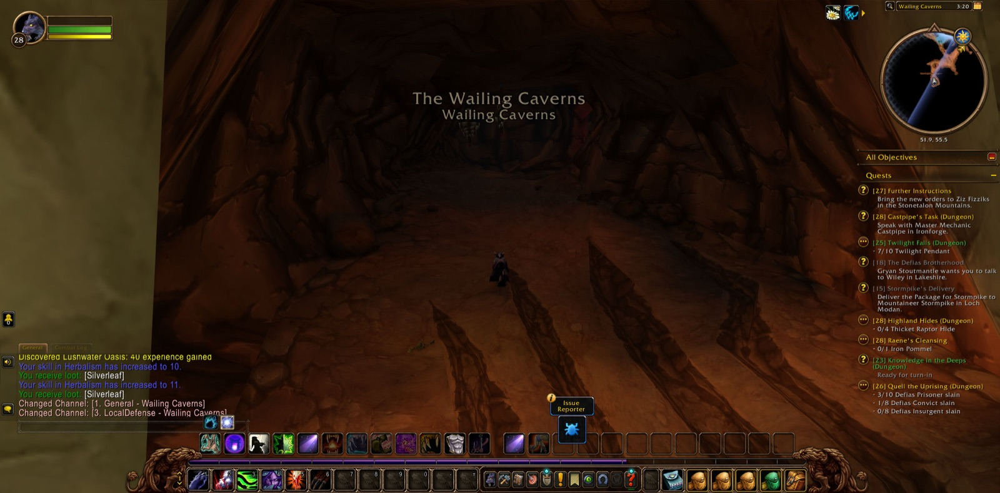
After that his way ran long and wide. It led by Menethil Harbor in the Wetlands, past the Gates of Ironforge and Kharanos, through Searing Gorge and the Burning Steppes, by Northshire Valley and the Valley of Heroes. At Mirror Lake Rambleon, a hunter, joined him and kept company with him far into the deeds that followed. The road ran on through Westfall to Longshore, and then to Nighthaven in Moonglade. At the Shrine of Remulos Cassidy found the Pendant of the Sea Lion, and so the Trial of the Sea Lion was ended. He crossed by Rut'theran Village to Darnassus, and in the Cenarion Enclave he showed the pendant to Mathrengyl Bearwalker. With that the errand of the Aquatic Form was fulfilled.
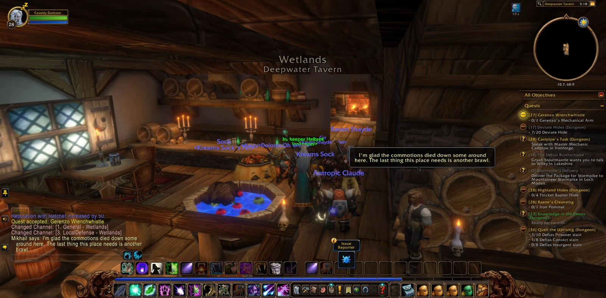
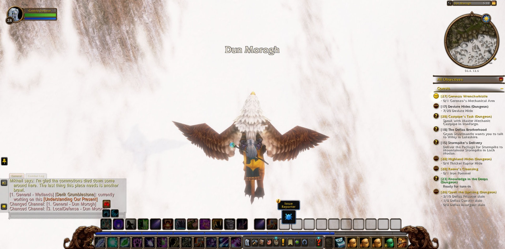
Back over the Veiled Sea he went, and at Stonetalon Peak he gave account of the Charred Vale. Then he turned east through Ashenvale. Quentyn, a hunter, met him by Splintertree Post for a brief moment as the Iron Pommel was found for Raene's Cleansing. In the Dor'Danil Barrow Den Eldrine, a druid like himself, shared a single meeting. In the Warsong Labor Camp and the Lumber Camp he gathered orcish daggers and swords, though the camps did not yield them easily. Among the ruins of Satyrnaar he found Kurothel's belongings, and at Forest Song the Vengeful Trail gave way to Shared Fury. Will, a mage, came to his side there and stayed with him to the last. In Xavian the rogues, felsworn, hellcallers and betrayers of that place were overthrown. There Cassidy came into new strength at the twenty-ninth level, and a picture was taken. In Xavian too Rambleon parted from him. At Silverwind Refuge the orcish advance was slowed and Elemental Bracers were asked of him. By the Moonwell, Astranaar and Mystral Lake he carried Raene's Cleansing forward, re-enchanting Dartol's Rod at the hidden shrine. His last steps brought him to the Deepwater Tavern, and the road went on from there.
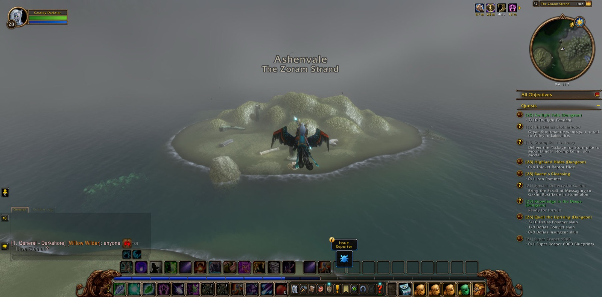
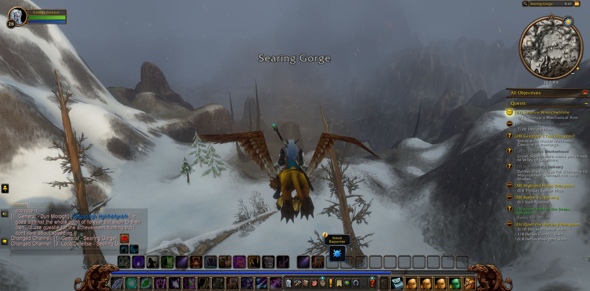
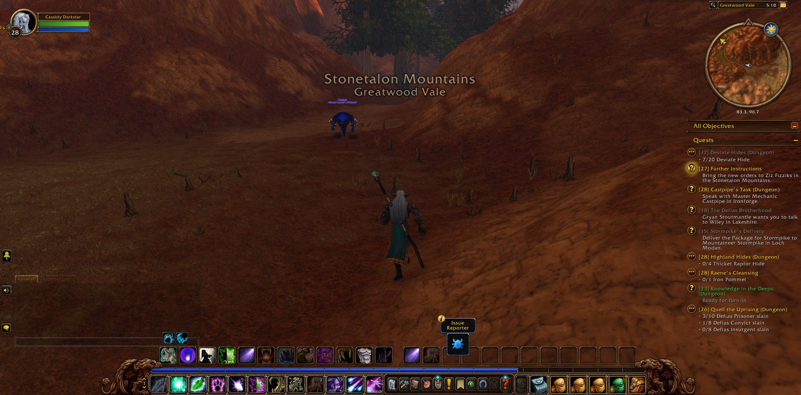
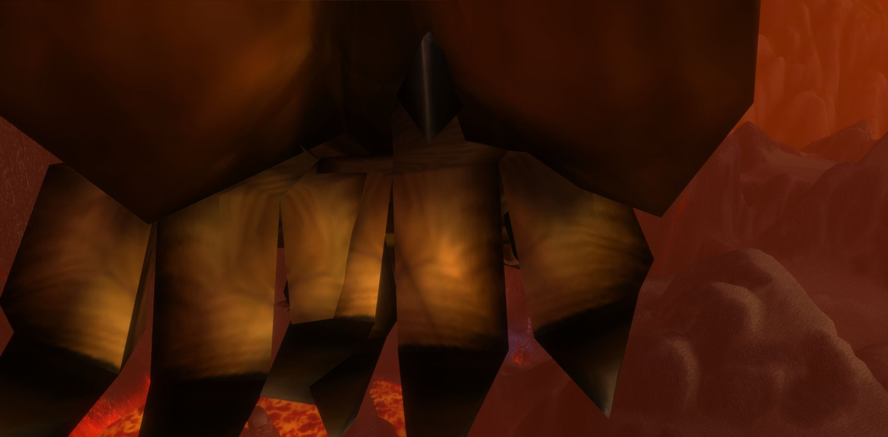
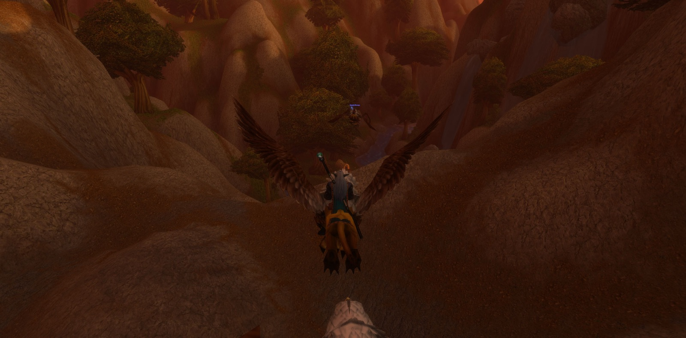
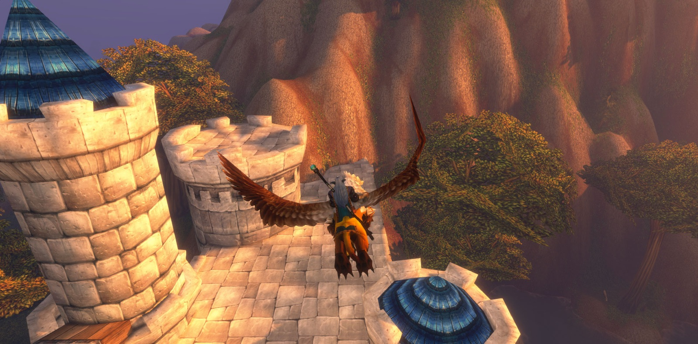
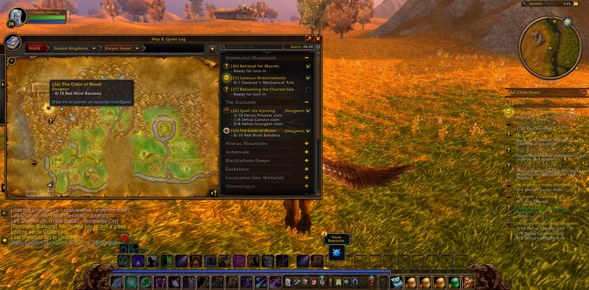
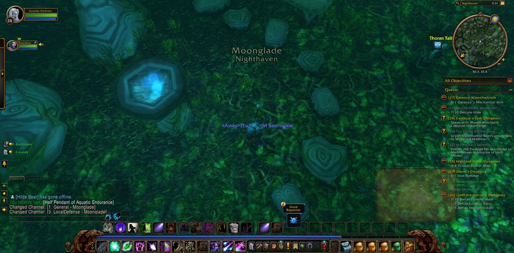